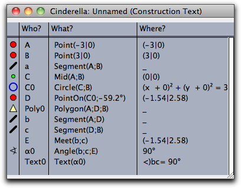

Views
The entry "Views" in the menu bar offers items for opening windows containing different views of a geometric construction. Each view is a kind of "projection" of the abstract configuration to some visible part of the computer screen. Usually you can create constructions and manipulations in any of the views. The changes are reported to the other views immediately. In particular, you can have several views of the same type (for instance two Euclidean views with different scales).
The views are also related to the different kinds of geometries. Which view is appropriate for which geometry is discussed in the section Views and Geometries.
Euclidean View
The Euclidean view is the usual drawing surface. When Cinderella is started you will get a window containing a Euclidean view. It is the natural window for doing Euclidean geometry.
 |
| Pascal's theorem in a Euclidean view |
The Euclidean view has view-specific control buttons. They can be used for zooming and translation. Furthermore, they are used to control grids and snap points.

- With a press–drag–release sequence you mark a region. The view will be zoomed to show exactly this region.
- You can click the left mouse button over any position in the view. The view will be zoomed around the click point. The factor of zooming is 1.4. You can also click the right button (or shift-click the left button) to get the inverse of this zooming operation.

- With a press–drag–release sequence you can mark a region in the view. The view will be appropriately zoomed so that the currently visible part zooms to that region.
- You can click the left mouse button at any place in the view. The view will be zoomed around the click point. The factor of zooming is 0.7. You can also click the right button (or shift-click the left button) to get the inverse of this zooming operation.


 |
| Using "snap" mode for exact drawings |
Spherical View
The spherical view arises from a projection of the Euclidean plane onto the surface of a ball. The center of the projection is the center of the sphere. The plane does not pass through this center.
 |
| Projection from the plane onto the ball |
This projection maps each point to an antipodal pair of points on the sphere. Each line is mapped to a great circle (an equator) on the sphere. The incidence structure is preserved. Working with the spherical view allows elements at infinity to be manipulated. They lie on the boundary of the image of the unrotated sphere.
 |
| Pascal's theorem in a spherical view |
The spherical view is a natural way to represent elliptic geometry. Measurement of angles between lines corresponds to measuring angles on the sphere. Measuring distances corresponds to the usual geodesic measurement of distances on the sphere, keeping in mind that antipodal points are identified with each other.


The scale slider: This slider lets you control the distance from the sphere to the Euclidean plane. You can use this slider to find the proper magnification of the drawing.
Hyperbolic View
The hyperbolic view is the natural view for hyperbolic geometry. In fact, doing hyperbolic geometry is the main reason for opening a hyperbolic view. The hyperbolic view represents an implementation of the Poincaré disk model of hyperbolic geometry. In this model the (finite part of the) hyperbolic plane is represented by a disk. Each line is represented by a circular arc that is orthogonal to the boundary of this disk. The measurement of angles between lines is conformal. This means that you can read off angles by measuring Euclidean angles between the circular arcs. The measurement of distances is such that the elements on the boundary are "infinitely far away" from any other point on the disk. If you "walk" in hyperbolic unit steps in one direction, you will never reach the boundary. In the disk, the steps seem to become smaller and smaller (in Euclidean measurement).
 |  | |
| Hyperbolic circles of equal size | Hyperbolic altitudes meet in a point. | |
Polar Euclidean and Spherical Views
Polarity is an important concept of projective geometry. Because of the complete symmetry between lines and points, it is possible to turn every statement about incidences of points and lines into a corresponding "polar statement" in which the roles of points and lines are interchanged.
Cinderella offers two polar views for visualizing polarity. The polarity implemented in Cinderella is the polarity with respect to the identity matrix. In algebraic terms, we use the homogeneous coordinates of a point and interpret them as a line, and vice versa. Geometrically, this finds its easiest interpretation in the spherical view. Whenever you have a point, consider it as a "north pole"; the corresponding "equator" is its polar line. Whenever you have a line, consider it as an "equator"; the corresponding "north pole" is its polar point. The figure below shows a configuration in the spherical view and in the polar spherical view.
 |  | |
| A configuration … | … and its polar | |
Polar view elements are selectable, but moving them is disabled. If you want to move elements, you have to control them in a primal view.
Construction Text
The construction text is a textual description of the construction steps. Each element of the geometric construction is represented by a row in the construction text window.
 |
| A picture of Thales' theorem |
Each row shows a little icon that resembles the element it refers to. The icon is shown in the size, color, and shape of the element. This makes it easy to identify elements quickly.
 |
| The construction steps for Thales' theorem |
The construction text consists of four columns. The first column shows the icons. The second column shows the labels of the geometric elements. These labels are unique identifiers within the construction. The third row explains how the element is defined. The fourth row represents the current value of the element. In most cases this is the present location with respect to the coordinate system. With the menu "Format" you can change how the locations or values of elements are shown.
The texts that appear in the "construction text" are exactly the three entries that can be referenced in text mode.
The four columns are separated by vertical lines. You can select these lines with the mouse to control the width of each column. If the text has too many rows for the window, a scrollbar at the right side of the window is available for scrolling.
General Functions
In each view, a toolbar at the bottom displays view-specific operations. Those that are common to all views are described below.


Choose the geometry: With these buttons you change the current geometry. All geometric constructions refer to this geometry. For a detailed discussion of geometries consult the chapters Geometries and Theoretical Background.
Page last modified on Sunday 04 of September, 2011 [18:32:59 UTC].
The original document is available at
http://doc.cinderella.de/tiki-index.php?page=Views